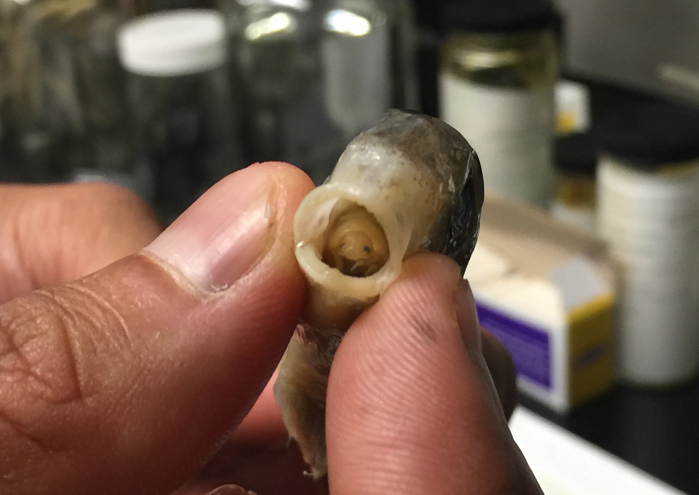
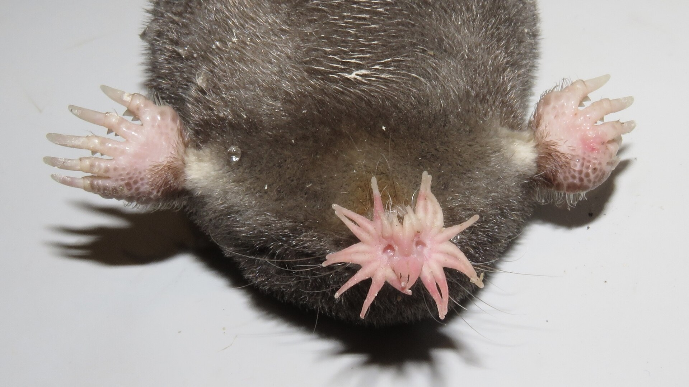

Ethics Isn’t Real
I was recently asked by the University to ‘assess myself’ on numerous scales, one of which being ‘personal integrity and ethics’. My answer was superlative:
“I have absolute moral standards. Whether I can tie those to an institution’s ethical standards is a different question, mostly because I don’t believe ethics exist.”
Me, 2026This is a controversial take from me, allegedly. It is met with that certain kind of silence afterwards, one I have come to associate with me tearing up any implicit social contract between the conversationalists where I supposedly agreed to not disrupt whatever peaceful state of mind they are inhabiting. People, generally, I have come to realise, do not wish for any truly groundbreaking discussions unless they prime their mind for it beforehand. This view of mine is one known to mark me immediately as ‘too much’.
This, however, does not determine its validity.
Existential Meaning
Now, a lame critic might begin this by asking what one means by ethics. Instead, I want to assess what I mean when I say ethics isn’t real.
I see two ways in which this can be seen through.
-
The married bachelor cannot exist. It is a logical necessity that he does not, otherwise the fabric of the Universe may unravel like toilet roll. In this sense, when one says the married bachelor isn’t real, we are saying he cannot be real.
-
Silopronelia is a word. I invented it on XYZ to mean a flower in the shade of Spongebob. Such flowers either do not exist, which I have not properly checked, or can fully be classified by other, more purposeful characteristics. So, whilst there is nothing inherently wrong with the concept of silopronelia itself, it does not reflect reality whatsoever, as it has no meaning attached to it. This is the angle through which I shall debunk ethics.
Ethics
It is now inevitable that I must define what I mean by ethics. Nebulous and insidious terms disguise their meaning behind veils of obfuscation, and ethics is no different. I can identify two, common uses of ethics and will outline them below.
1. Ethics as the study of morality
Fairly explicitly here, ethics can be seen to be entirely subsumed by morality. Furthermore, I’m not aware of any other term defined like ethics. We don’t say veldrisum is the study of mathematics, as we recognise that would be a superfluous term. We instead say mathematics is the study of mathematics. So why does ethics get a pass here? Why can morality not be defined as the study of morality? Ethics seems to occupy a deeply parasitic role, one I find ever so reminiscent of the tongue-eating louse.

What may appear to be a humble little fish hides a hideous secret. Sometime in his life this fish had a foreign alien sneak into his gills, clawing its way through the fish's system and towards its mouth. There, it clamps onto the fish's tongue. Contrary to its name, which is a tad hyperbolic, the parasite does not consume the tongue. It bites down onto the tongue, severing the blood supply and eventually causing the tongue to fall off. If one looks a little harder into the fish's mouth, you may see our louse hiding there, siphoning off a portion of the fish's food forever.
2. Ethics as a system of rules governing conduct
Ethics essentially attempts to cover which rules or principles govern behaviour. They attempt to tell people what they ought to do…hang on a second that’s just morality again. If your organisation believes they should commit to net zero by probably four hours from now, the very language they’re using (the ‘ought’) is moral in its very nature. The justification for doing so is moral-based too: they believe this principle is a ‘good’ thing/ the right thing to do. Again we see this system for governing behaviour has degenerated into a much more fundamental concept.
As my computer science GCSE teacher so eloquently elaborated, ethics is the morality of a group. It's nothing but a redundant corporate middleman, the kind who Labour would gladly rehire then promote to become a permanent role with a civil servant pension instead of stopping increasing the debt.
I use the word ‘govern’ frequently and intentionally above. Whilst not a mutually exclusive category from morality degeneracy, often ethics devolves into naught but the language of governance: legalese. When the sole reason for a company to enact a policy is to obey the law, ethics enters the realm of the legal. Even professional ethical codes are nothing but the internal laws of the company.
If you’re looking to prove this hypothesis yourself, then I offer a little game. Imagine any sentence, and I mean any sentence, with the word ethics in it, or its derivatives or cousin words, too. Don’t try to be smart and pick a sentence like “ethics isn’t real” or “my module is called ethics”, where ethics obviously refers not to a concept, but instead to the concept of the word of ethics: only the hollow shell under which any proper meaning is meant to lie. And now imagine that sentence has the word morality instead. I can guarantee you that sentence serves the same meaning, ignoring social niceties, but you should always do that anyway.
Why Do I Care?
An increasing character flaw of mine I have identified is that in my vast, unending and often destructive search for meaning, acting like an excavator bucket eternally scooping whatever I sacrifice in front of it, I often choose not to check whether there is anything to dig for. Here, I most certainly argue there is a greater evil to uncover.

The beautiful star-nosed mole, who takes the title of the fastest-eating mammal. Supposedly, studying these little dudes can bring insight into the human brain. Their stars are embryonic: they are so fundamental to this animal they even form in the womb. Following from this, humans have tails for a considerable period of their lifespan in the womb.
I believe the greatest factor as to the immense decline of this country is not some economic policy, however disastrous. When one looks at the very fabric of the nation, one may discover that the great difference between us and, say, the Victorians or the Edwardians, is our lack of a sense of morality. There is no Wikipedia page on the Ethics of the Victorians, only their morality. I do not wish to cause fiery seething and rage, dear reader, by claiming their morality is correct - that I certainly do not believe. Instead, I identify great virtue in the possession of strong morals themselves. It is, in a sense, the act of having morals that makes a society itself.
Not having morality isn’t something that humans generally are happy with, human society more specifically. It underpins the very foundation of the social contract. From morality, one can extract a sense of duty and respect for others, in addition to the desire to do ‘good’ in and of itself.
But having morality means one must pay a price. It necessarily must extract a toll, for choosing to prioritise anything other than yourself must always be thus. For Christians, it pertains to giving up time on your weekend to go to church, perhaps then throwing a few coins at the bucket passes around, and a few minutes of prayer sometimes. Oh, and the submission of your identity to the man in the sky, along with eternal obedience to a series of increasingly dubious principles in an ancient text (I love Christianity really pls believe me). Furthermore, due to the deeply personal nature of morality, it requires introspection and self-reflection. And if you fail in your moral system, the blame must solely lie with you, and depending on how much power you give your system, that can be painful. You have failed right at the heart of your very being because of who you are and what you chose to do.
Our age, funnily enough, is not willing to do that with nearly the same conviction as ages gone by. Instead, a replacement was devised, and I don’t mean to suppose there was some grand overarching intentional scheme here, simply that one option was easier than the other. We outsource our morality to some sort of ethics code. We place the responsibility on that with some company and some HR representative (see, they’re a modern invention as well so it fits the hypothesis). It’s not my job to decide what is right or what it not right with my job - that’s for the ethics code to tell me. ‘I broke the ethics code’ sounds a whole lot better than I broke my own moral code, and so we optimise for ease by choosing to believe procedural compliance is enough. Even the word itself ‘ethics’ conjures up a far cushier image than the harshness of ‘morality’. Ethics seem optional, like the pondering of a greek statue, but morality brings up some Renaissance painting of a counsel of men in a thunderstorm and the heavens above them. Those are quite specific because I stole them from Wikipedia, but they highlight the juxtaposition between our two terms and their desirability.
We do not exercise our own, intrinsically personal and weighted moral judgement because society tells us the rules are sufficient. Compliance has been institutionalised and is a metric for success. We are neutering the greatest invention of humanity - the moral system - which is the bedrock of our very society itself because we cannot handle the responsibility.
Ethics, thusly, is evil. Its usage is despicable. It is a symptom of a disease within society: a lack of responsibility, duty and morality. Despite the noble intention of maintaining the Greek root word ethos, ethics must be abolished and its usage nullified. Like the time I started a term long mould colony in a lunchbox (which I still use, and there was a fly in there as well), when we abolish ethics, morality will grow, spread, and flourish in its place. And that is all I wish for.
Oh, and I wish I’d have taken a picture of that lunchbox in its prime.
TL;DR
Ethics is morality wearing a lanyard. Abolish the lanyard, let morality flourish, and please remember to photograph your mould colonies.